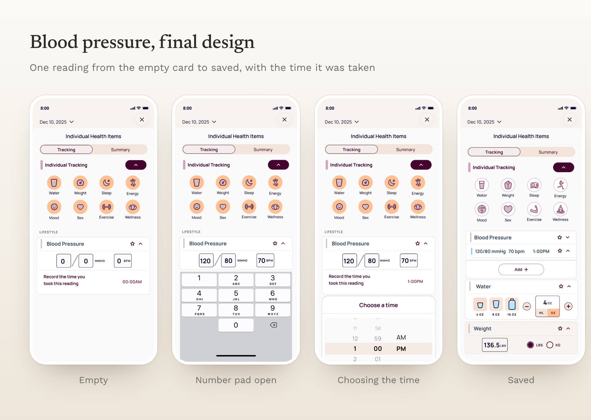
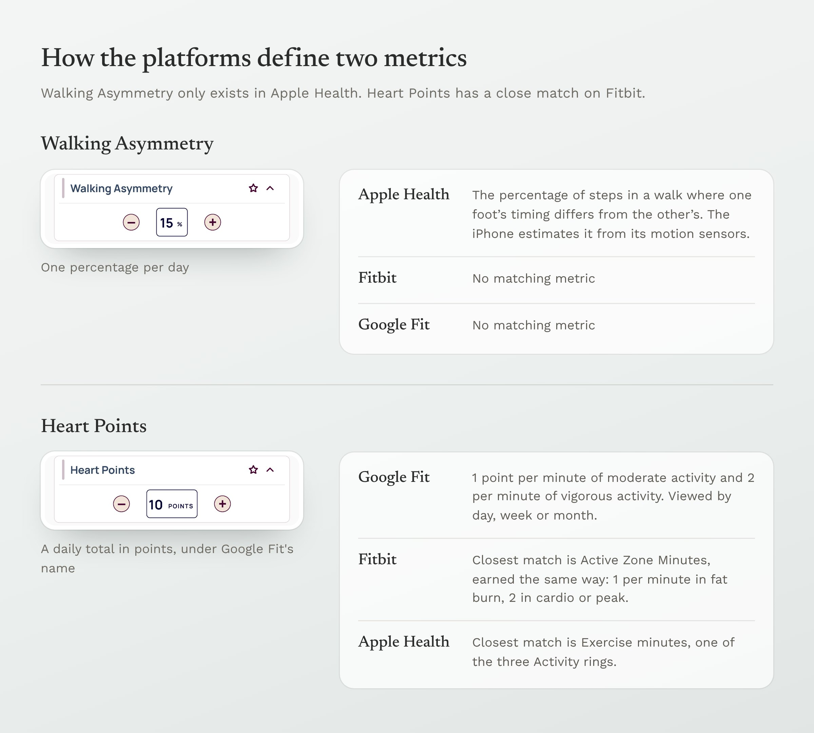
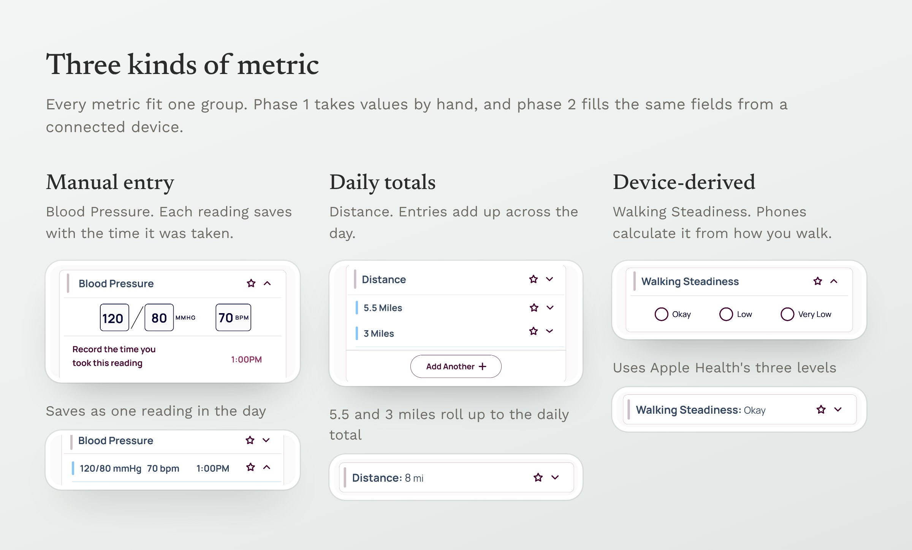
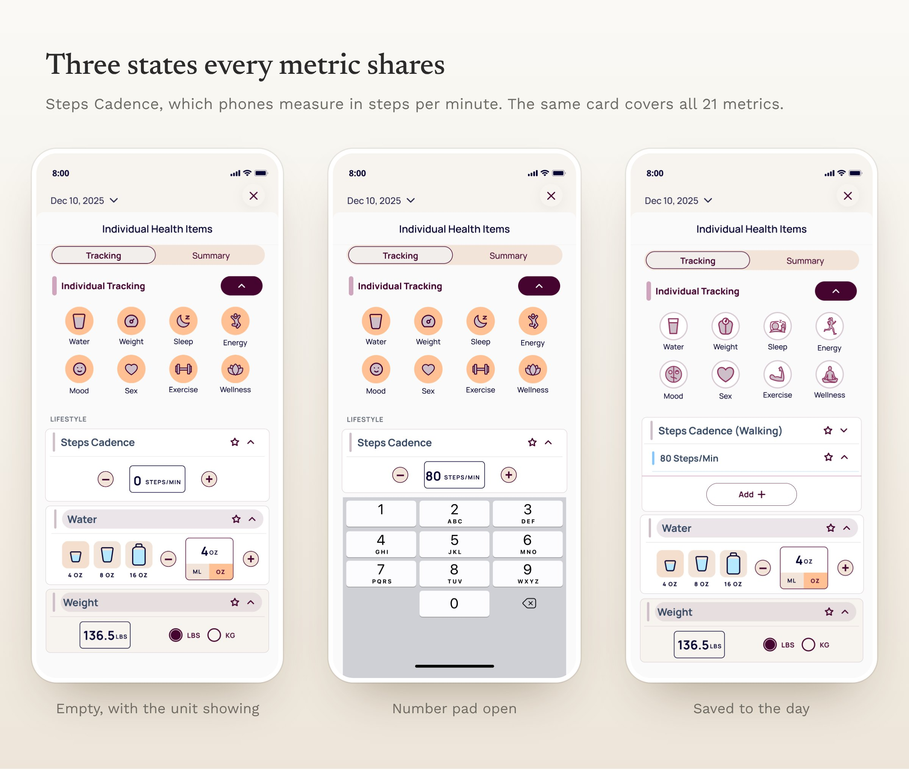
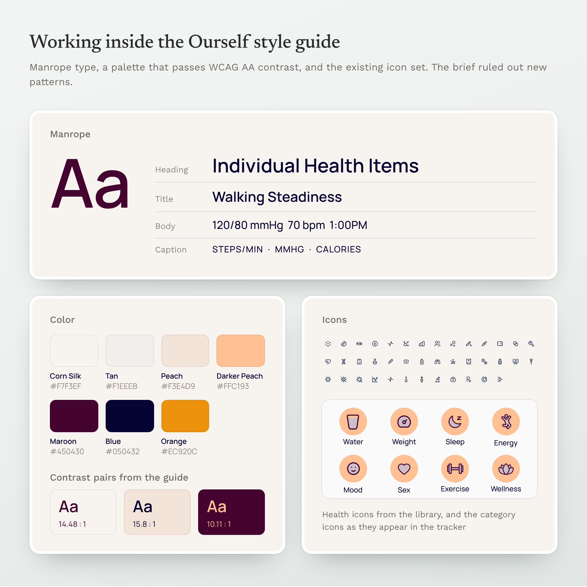
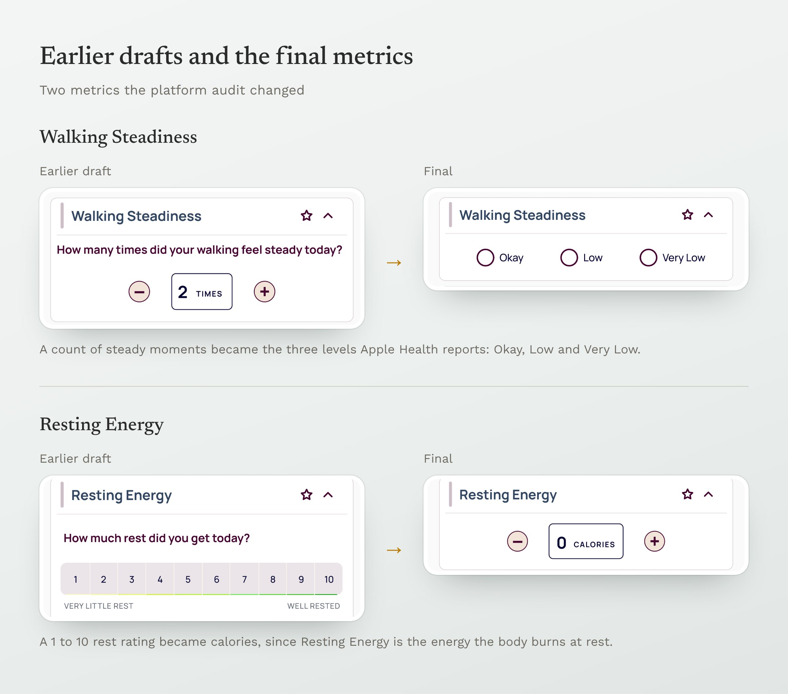
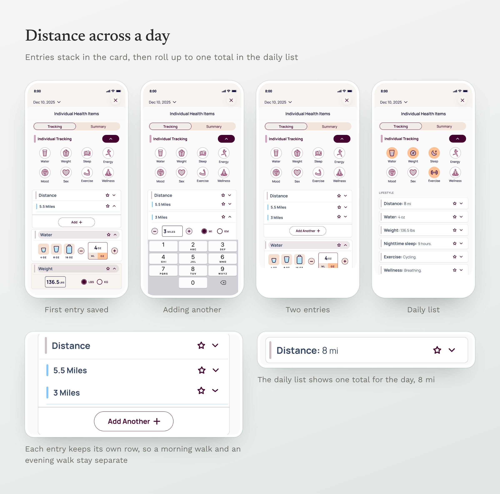
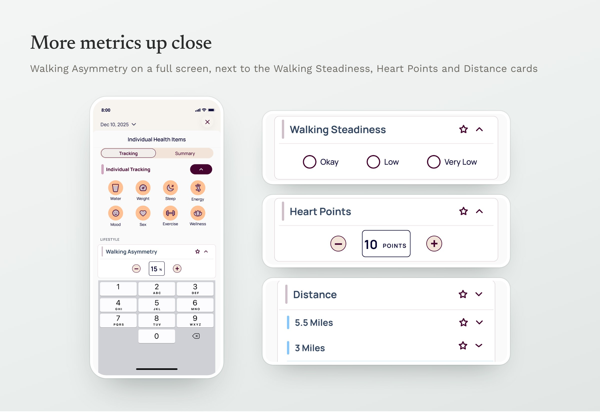

A metrics system built for integration
Ourself Health needed 21 health metrics designed to work in two phases. At first, people log them by hand. Once device syncing launches, the same screens fill in with data from Apple Health, Fitbit, and Google Fit.
I audited how Apple Health, Fitbit, and Google Fit handle each metric, then sorted all 21 into three groups. I matched each one to how those platforms already measure and label it, down to the unit.
I delivered all 21 designs in four weeks. One set of screens works in both phases, and the team has a classification model they can use to sort new metrics before anyone starts designing them.

Fig 01. Blood pressure from the empty card to a saved reading, final design
Ourself Health is a wellness app focused on longevity and daily habits. It's built to pull fitness data from Apple Health, Fitbit, and Google Fit into one place, so people can see their health across all their devices.
Device syncing wasn't ready yet, so the project came in two phases that had to share one design. In phase 1, people enter each value by hand. In phase 2, once the device integration ships, the same tracker fills in from a connected device like a Fitbit. For that to work, every metric had to match how Apple Health, Fitbit, or Google Fit already presents it, and the brief didn't allow any new UX patterns.
That got tricky with metrics like Walking Asymmetry, step cadence, and cycling speed. Phones and watches calculate these from sensors. The manual version still had to ask for them in the unit a device would later send, like steps per minute or a percentage, so synced data would have a place to land.
I audited how Apple Health, Fitbit, and Google Fit handle each metric: how it's measured, how it's totaled or averaged over a day, how it's displayed, and what changes once device data comes in. The same metric can be calculated differently on each platform, so I needed to understand the data logic behind the screens. I used Claude along the way to check whether my read on each platform held up.
Take two Apple Health metrics. Flights Climbed is a count that keeps adding up through the day, while Walking Asymmetry is a percentage the iPhone estimates from how you walk. Some metrics also live on only one platform. Walking Asymmetry has no Fitbit or Google Fit version, and Heart Points comes from Google Fit, with Fitbit's Active Zone Minutes as the closest match. In those cases I followed the platform the metric came from.

Fig 02. Two metrics compared across the platforms, next to my entry card for each.
Sources: Apple, Google Fit Help, Fitbit Help
Based on the audit, I sorted every metric into one of three groups before designing it. The group decides how the card takes a value and how that value shows up in the day's list. All three work by hand in phase 1 and take device data in phase 2 without any change to the screen.
Group 1
Readings like blood pressure are taken at a moment in the day. The card asks for systolic, diastolic, and pulse, then the time of the reading, so two readings on the same day stay separate.
Group 2
Distance, Steps, Heart Points, and Move Minutes build up over a day. People can add more than one entry, and the daily list shows the sum. Heart Points and Move Minutes come from Google Fit, so they use Google Fit's names and units.
Group 3
Cadence, cycling speed, and Walking Steadiness come from sensors. Each shows one value per day in the device's own unit or scale. Walking Steadiness uses Apple Health's three levels, Okay, Low, and Very Low, so a synced value drops straight in.
Rules for all three groups:

Fig 03. One metric from each group, from entry to how it saves
For each metric, I matched the Apple Health, Fitbit, or Google Fit version: the name, the unit, how it's displayed, and how people expect to interact with it. Every metric uses the same card with three states: empty with the unit showing, the number pad open, and saved to the day. Metrics that need it also get a time picker. Using one card for all 21 kept four weeks realistic.

Fig 04. Steps Cadence in the three states every metric shares
I designed inside Ourself's existing style guide: Manrope type, the maroon and orange palette, and the health icon set. Every metric reuses those pieces, so nothing on the tracker introduces a new pattern.

Fig 05. The parts of the Ourself style guide every metric draws on
Earlier versions in the file treated Walking Steadiness as a count of steady moments and Resting Energy as a rest rating from 1 to 10. Apple Health reports steadiness as Okay, Low, or Very Low, and Resting Energy is the calories your body burns at rest. If either had shipped as a count or a rating, synced data would have had nowhere to go, so both were rebuilt to match.

Fig 06. Earlier drafts and final designs for two metrics
Example 1
Heart Points is a Google Fit metric: 1 point for each minute of moderate activity and 2 for vigorous. Until syncing launches, people enter it as a daily total, using Google's name and unit as written.
Example 2
Step cadence is measured in steps per minute and cycling cadence in RPM, and sensors calculate both continuously. For now people enter one daily value in that unit, and synced data will fill the same field later.
Example 3
Apple Health estimates both from the iPhone's motion sensors. Asymmetry takes a percentage, and steadiness uses Apple's three levels, so phase 2 can fill them in without touching the card.

Fig 07. Distance from the first entry to the daily list, with the details up close

Fig 08. Walking Asymmetry on a full screen, with Walking Steadiness, Heart Points and Distance up close
The team came away with designs for all 21 metrics and a classification model they can use to sort new metrics before anyone starts designing them.
Matching another platform exactly meant spending a lot of time on small things, like units, labels, and the wording inside each card. If a metric showed a plain step count where Apple Health shows steps per minute, engineering would have had to come back and fix it once syncing goes live.
I used Claude to test my read on how each platform calculated a metric, and to tighten the microcopy across all 21 designs. With health data, a wrong unit or label can mislead someone, so I wanted a second check before anything went to engineering.
What I'd do differently: I built the classification model partway through the project, after running into metrics that didn't fit a group cleanly. If I'd set it up in the first week, my early conversations with the product team would have been more focused. We spent time in those first check-ins debating edge cases that the model would have settled quickly.